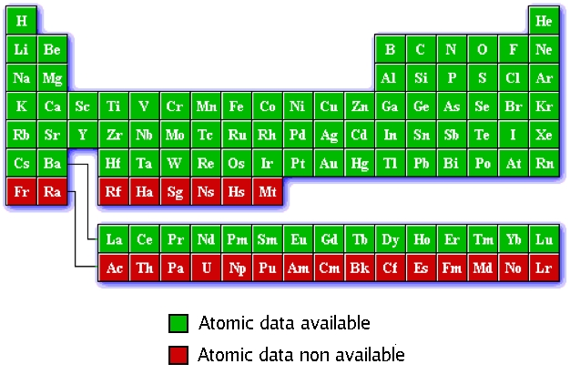

PAW atomic datasets
On this page you can find files containing PAW atomic datasets for ABINIT and tools to produce your own.
Although the PAW atomic datasets present on this page have been carefully tested, they are provided without warranty.
Users should test them adequately before using them in their applications.
JTH PAW atomic datasets table
The atomic datasets files are provided in XML format according to
PAW-XML specifications, allowing sharing them among multiple codes. ABINIT can read them from version 7.6.
Please consult (and cite) this
paper (Computer Physics Communications 185, 1246 (2014)) for full details on the design criteria and testing procedure.
Clicking on a green cell in the periodic table will bring you into a directory corresponding to the selected chemical element.
The size of a dataset file may vary between 500 kB and 1 MB.

Current version of the library : JTH - v0.2
Quality indicator (comparison to all-electron data):
Δ-value=0.5 meV,
Δ1-value=1.3 meV
Download the entire dataset table:
LDA,
PBE
Documents and tools
- Consult these notes for full details on the JTH v0.2 PAW atomic dataset library validation results.
- The JTH atomic datasets library has been tested by means of the Delta calculation package provided by the CMM group of Ghent University. Δ-value is defined as the root-mean-square energy difference between the equations of state of two codes, averaged over all crystals in a purely elemental benchmark set. On the corresponding webpage, several pseudopotential/PAW codes and dataset libraries are compared with all-electron results performed with the Wien2K code.
- For each PBE atomic dataset in the JTH library (above), the delta-value is provided (relative to Wien2K results).
The JTH atomic data have also been confronted to the GBRV dataset library using part of the benchmark set provided on its web site.
Full details on these comparisons are given in the notes.
-
Abinit2XML: A small tool to convert PAW atomic datasets in ABINIT proprietary format into XML-formatted datasets (following the PAW-XML specifications)
- Some other public libraries of PAW atomic datasets (readable by ABINIT) are available:
ATOMPAW,
GPAW,
GBRV,
Vlab.
These datasets should be tested carefully before use in ABINIT.
How to generate PAW atomic datasets for ABINIT
To use ABINIT in specific conditions it is recommended to produce its own atomic data sets.
This is the case, for example, if one wants to make simulations in specific thermodynamic conditions, or use specific exchange-correlation functionals, etc...
- AtomPAW atomic dataset generator
AtomPAW is a PAW atomic data generator whose main authors are
N. Holzwarth
, M. Torrent and F. Jollet.
Since ABINIT v6.8, it is integrated in ABINIT package as a
plugin.
Follow the
guidelines
to generate your own atomic datasets with
ATOMPAW.
- USPP atomic dataset generator
USPP is an ultra-soft pseudopotentials generator written by
D. Vanderbilt
.
It has been patched by M. Torrent and F. Jollet in order to make it produce PAW atomic datasets, either in XML format or in ABINIT proprietary format.
Follow the
guidelines
to generate your own atomic datasets with
USPP.
Release notes, older versions of the datasets
- September 15, 2014
JTH version 0.2 is available. With respect to v0.1, several datasets have been updated, taking into account the comparisons done by the
GBRV group.
In addition to
Delta calculations (version 0.3 with new all-electron references), all fcc and bcc structures have been compared to all-electron results. Some datasets have also been improved in order to better reproduce magnetic properties of their oxides.
The datasets are provided in the updated XML format. The
PAW-XML specifications have been slightly improved following a CECAM meeting organized in Paris in January 2014.
Authors: F. Jollet, M. Torrent (CEA-Bruyeres-le-Chatel).
- September 26, 2013
JTH version 0.1 is available. Full details on this first official version of the JTH library are given in this Computer Physics Communications
paper, including design procedure, theoretical background and testing thanks to the
Delta package.
Note that this is the first ABINIT PAW library published in the
PAW-XML format.
Authors: F. Jollet, M. Torrent (CEA-Bruyeres-le-Chatel), N. Holzwarth (Wake Forest University).
- July 1, 2009
This 2009 version of the PAW dataset table has been completely redesigned: instead of multiple tables corresponding to several generators, only one table is provided.
Links to datasets from
ATOMPAW table are also provided.
Contribution from M. Torrent (CEA-Bruyeres-le-Chatel).
- September 3, 2007
New version of the
ABINIT PAW dataset library, including a new "CONTRIB" section: PAW atomic datasets generated by experienced ABINIT users are now provided.
This new library of external contributions has been generated by
J. Zwanziger (Dalhousie University) and A. Jacques (UCL).
- December 22, 2006
Some PAW datasets have been added to the "recommended" table.
Contributions from CEA-Bruyeres-le-Chatel group.
- September 14, 2005
A brand new set of PAW atomic data is published, using improved versions of the Atompaw2Abinit and USPP2Abinit generators. Now these tools are mature and can produce reference data.
Authors: M. Torrent, F. Jollet (CEA-Bruyeres-le-Chatel).
- October 10, 2003
The very first version of the
ABINIT PAW dataset library; only few atomic species are available.
The Atompaw2Abinit and USPP2Abinit tools are officially published thanks to a fruitful collaboration with
N. Holzwarth and
D. Vanderbilt.
All datasets have been generated by M. Torrent, F. Jollet and F. Bottin (CEA-Bruyeres-le-Chatel).